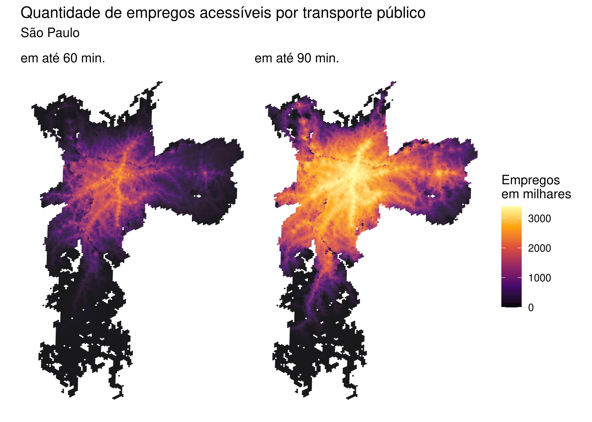

Finalmente, o pacote {aopdata} também permite baixar, para todas as cidades incluídas no projeto, estimativas de acesso a empregos e a serviços de saúde, de educação e de assistência social para os anos de 2017, 2018 e 2019.
Esses dados podem ser baixados com a função read_access(), que funciona de maneira análoga às funções read_population() e read_landuse(), apresentadas anteriormente. Além de indicar a cidade (parâmetro city) e o ano de referência (year), no entanto, é necessário também informar o modo de transporte (mode) e o intervalo do dia (pico, entre 6h e 8h, ou fora-pico, entre 14h e 16h, controlado pelo parâmetro peak).
No exemplo a seguir, mostramos como baixar estimativas de acessibilidade no período de pico em São Paulo referentes ao ano de 2019. Nesse exemplo, baixamos as estimativas de acessibilidade tanto por automóvel quanto por transporte público e as unimos em um único data.frame. Note que essa função resulta em uma tabela que traz também, automaticamente, os dados de população e de uso do solo.
# baixa dados do AOP de acessibilidade por transporte públicoacesso_tp <- aopdata::read_access(city ="São Paulo",mode ="public_transport",year =2019,peak =TRUE,geometry =TRUE,showProgress =FALSE)# baixa dados do AOP de acessibilidade por automóvelacesso_carro <- aopdata::read_access(city ="São Paulo",mode ="car",year =2019,peak =TRUE,geometry =TRUE,showProgress =FALSE)# junta os dados em um único dataframedados_sp <-rbind(acesso_tp, acesso_carro)names(dados_sp)
Como podemos ver, assim como nos casos das tabelas de dados sociodemográficos e de uso do solo, os nomes das variáveis de estimativas de acessibilidade estão organizados em códigos, como CMAEF30, TMISB e CMPPM60. Esses códigos são resultado da combinação de três componentes:
O tipo de indicador de acessibilidade: é indicado pelas três primeiras letras do código. Os dados incluem três categorias de indicadores:
CMA - Indicador de acessibilidade cumulativa ativa;
CMP - Indicador de acessibilidade cumulativa passiva; e
TMI - Indicador de tempo mínimo até a oportunidade mais próxima.
O tipo de atividade para a qual os níveis de acessibilidade foram calculados ou a que pessoas o indicador se refere: é descrito pelas letras seguintes, que estão no meio do código. Os dados incluem estimativas de acessibilidade para diversos tipos de atividades:
TT - Todos os empregos;
TB - Empregos de baixa escolaridade;
TM - Empregos de média escolaridade;
TA - Empregos de alta escolaridade;
ST - Todos os estabelecimentos públicos de saúde;
SB - Estabelecimentos públicos de saúde de baixa complexidade;
SM - Estabelecimentos públicos de saúde de média complexidade;
SA - Estabelecimentos públicos de saúde de alta complexidade;
ET - Todas as escolas públicas;
EI - Escolas públicas de ensino infantil;
EF - Escolas públicas de ensino fundamental;
EM - Escolas públicas de ensino médio;
MT - Todas as matrículas de escolas públicas;
MI - Matrículas de escolas públicas de ensino infantil;
MF - Matrículas de escolas públicas de ensino fundamental;
MM - Matrículas de escolas públicas de ensino médio; e
CT - Todos os CRAS.
No caso do indicador de acessibilidade passiva, as letras do meio do nome da variável indicam a qual grupo populacional os níveis de acessibilidade se referem:
PT - Toda a população;
PH - População de homens;
PM - População de mulheres;
PB - População branca;
PN - População negra;
PA - População amarela;
PI - População indígena;
P0005I - População de 0 a 5 anos;
P0614I - População de 6 a 14 anos;
P1518I - População de 15 a 18 anos;
P1924I - População de 19 a 24 anos;
P2539I - População de 25 a 39 anos;
P4069I - População de 40 a 69 anos; e
P70I - População de 70 anos ou mais.
O tempo limite de viagem utilizado no cálculo do indicador: é descrito pelos números ao final do código. Esses números somente se aplicam aos indicadores de acessibilidade cumulativa ativa e passiva e incluem os limites de 15, 30, 45, 60, 90 e 120 minutos, dependendo do modo de transporte.
Exemplos:
CMAEF30: número de escolas públicas de ensino fundamental acessíveis em até 30 minutos de viagem;
TMISB: tempo de viagem até o estabelecimento público de saúde com serviços de baixa complexidade mais próximo; e
CMPPM60: quantidade de mulheres que conseguem acessar determinada célula da grade espacial em até 60 minutos de viagem.
A descrição completa das variáveis também pode ser consultada na documentação da função, rodando em uma sessão de R o comando ?read_access. As seções a seguir mostram exemplos de visualizações desses dados em forma de mapas e gráficos.
9.1 Mapa do tempo para acessar o hospital mais próximo
Neste exemplo, comparamos o tempo de acesso por automóvel e por transporte público até o hospital mais próximo de cada hexágono. Para analisar o tempo mínimo de viagem (TMI) até hospitais de alta complexidade (SA), utilizamos a variável TMISA. Com o código a seguir, carregamos as bibliotecas de visualização de dados e apresentamos a distribuição espacial do tempo de acesso com os dois modos de transporte. Como os tempos de viagem por transporte público costumam ser muito mais longos do que por automóvel, truncamos a distribuição dos valores da variável em 60 minutos.
library(ggplot2)library(patchwork)# trunca os tempos de viagem em 60 minutosdados_sp$TMISA <-ifelse(dados_sp$TMISA >60, 60, dados_sp$TMISA)ggplot(subset(dados_sp, !is.na(mode))) +geom_sf(aes(fill = TMISA), color =NA, alpha =0.9) +scale_fill_viridis_c(option ="cividis",direction =-1,breaks =seq(0, 60, 10),labels =c(seq(0, 50, 10), "60+") ) +labs(title ="Tempo de viagem até o hospital de alta complex. mais próximo",subtitle ="São Paulo",fill ="Tempo em\nminutos" ) +facet_wrap(~ mode) +theme_void()
Figura 9.1: Tempo de viagem até o hospital de alta complexidade mais próximo em São Paulo
9.2 Mapa da quantidade de empregos acessíveis
Os dados do {aopdata} também tornam muito simples a comparação da quantidade de oportunidades acessíveis em diferentes tempos de viagem. Com o código a seguir, por exemplo, ilustramos como visualizar lado a lado as distribuições espaciais do número de empregos acessíveis em até 60 e 90 minutos de viagem, respectivamente, por transporte público.
# estabelece valores usados na legenda do mapalimites_legenda <-c(0, max(acesso_tp$CMATT90, na.rm =TRUE) /1000)# configura os mapasfig60 <-ggplot(subset(acesso_tp, !is.na(mode))) +geom_sf(aes(fill = CMATT60 /1000), color =NA, alpha =0.9) +scale_fill_viridis_c(option ="inferno", limits = limites_legenda) +labs(subtitle ="em até 60 min.", fill ="Empregos\nem milhares") +theme_void()fig90 <-ggplot(subset(acesso_tp, !is.na(mode))) +geom_sf(aes(fill = CMATT90 /1000), color =NA, alpha =0.9) +scale_fill_viridis_c(option ="inferno", limits = limites_legenda) +labs(subtitle ="em até 90 min.", fill ="Empregos\nem milhares") +theme_void()fig60 + fig90 +plot_layout(guides ="collect") +plot_annotation(title ="Quantidade de empregos acessíveis por transporte público",subtitle ="São Paulo" )

Figura 9.2: Quantidade de empregos acessíveis por transporte público em São Paulo
9.3 Desigualdades de acesso a oportunidades
Existem diversas maneiras de analisar quão desiguais são as condições de acesso a oportunidades nas cidades brasileiras a partir dos dados do {aopdata}. Nesta subseção, apresentamos três exemplos deste tipo de análise.
9.3.1 Desigualdade no tempo de acesso a oportunidades
Neste primeiro exemplo, vamos comparar o tempo médio de viagem até o hospital público mais próximo de pessoas de diferentes níveis de renda. Para isso, calculamos o tempo médio de acesso a estabelecimentos de saúde de alta complexidade ponderado pela população de cada célula da nossa grade espacial. Essa ponderação é necessária porque cada célula, por abrigar um número de pessoas diferentes das demais, contribui de forma diferente para a média da população como um todo.
Antes de realizar o cálculo, cabe observar que algumas células da cidade não conseguem acessar nenhum hospital em até duas horas de viagem. Nesses casos, o valor das variáveis de tempo mínimo de viagem é infinito (Inf). Para lidar com isso, neste exemplo substituímos todos os valores Inf por um tempo de viagem de 120 minutos.
# copia os dados de acesso em um novo dataframedesigualdade_tp <- data.table::as.data.table(acesso_tp)# substitui os valores Inf por 120desigualdade_tp[, TMISA :=ifelse(is.infinite(TMISA), 120, TMISA)]# calcula o tempo de viagem médio por decil de rendadesigualdade_tp <- desigualdade_tp[ , .(media =weighted.mean(x = TMISA, w = P001, na.rm =TRUE)), by = R003]desigualdade_tp <-subset(desigualdade_tp, !is.na(media))ggplot(desigualdade_tp) +geom_col(aes(y = media, x =factor(R003)), fill ="#2c9e9e", color =NA) +scale_x_discrete(labels =c("D1\nmais\npobres", paste0("D", 2:9), "D10\nmais\nricos") ) +labs(title ="Média de tempo de viagem até o hospital mais proximo",subtitle ="por transporte público em São Paulo",x ="Decil de renda",y ="Tempo de viagem\nem min." ) +theme_minimal()
Figura 9.3: Média de tempo de viagem por transporte público em São Paulo até o hospital mais próximo
9.3.2 Desigualdade no número de oportunidades acessíveis
Outra maneira de examinar a desigualdade de acesso a oportunidades é comparar a quantidade de oportunidades acessíveis por diferentes grupos populacionais considerando os mesmos modos de transporte e limites de tempo de viagem. Nesse caso, analisamos o indicador de acessibilidade cumulativa ativa, representado por variáveis cujos códigos começam com CMA na base de dados do {aopdata}. No exemplo a seguir, comparamos a quantidade de empregos acessíveis por pessoas de diferentes decis de renda, considerando viagens de transporte público limitadas em 60 minutos de viagem.
ggplot(subset(acesso_tp, !is.na(R003))) +geom_boxplot(aes(x =factor(R003), y = CMATT60 /1000, color =factor(R003)) ) +scale_color_brewer(palette ="RdBu") +labs(title ="Distribução do número de empregos acessíveis em até 60 min.",color ="Decil\nde renda",subtitle ="por transporte público, São Paulo",x ="Decil de renda",y ="N. de empregos acessíveis\n(em milhares)" ) +scale_x_discrete(labels =c("D1\nmais\npobres", paste0("D", 2:9), "D10\nmais\nricos") ) +theme_minimal()
Figura 9.4: Distribuição do número de empregos acessíveis por transporte público em São Paulo
Por fim, podemos também comparar como o uso de diferentes modos de transporte resulta em diferentes níveis de acessibilidade para a população e como essa diferença varia entre cidades. No exemplo a seguir, comparamos a quantidade de empregos acessíveis em até 30 minutos de viagem a pé e de carro. Para isso, precisamos primeiro baixar os dados de acessibilidade por ambos os modos para todas as cidades do projeto.
Em seguida, calculamos para cada cidade e para cada modo de transporte a média ponderada do número de empregos acessíveis em até 30 minutos (CMATT30). Feito isso, juntamos essas estimativas em uma única tabela e calculamos a razão entre os níveis de acessibilidade por carro e os níveis de acessibilidade a pé.
# calcula a média de empregos acessíveis em 30 minutosmedia_carro <- dados_carro[ , .(acesso_carro =weighted.mean(CMATT30, w = P001, na.rm =TRUE)), by = name_muni]media_caminhada <- dados_caminhada[ , .(acesso_caminhada =weighted.mean(CMATT30, w = P001, na.rm =TRUE)), by = name_muni]# junta os dados e calcula a razão entre o nível de acesso por carro e a pémedia_acesso <-merge(media_carro, media_caminhada)media_acesso[, razao := acesso_carro / acesso_caminhada]head(media_acesso)
Finalmente, podemos visualizar os resultados graficamente:
ggplot(media_acesso, aes(x = razao, y =reorder(name_muni, razao))) +geom_bar(stat ="identity") +geom_text(aes(x = razao +4 , label =paste0(round(razao), "x"))) +labs(title ="Diferença entre a quantidade de empregos acessiveis por\nautomóvel e por caminhada",subtitle ="em até 30 min. de viagem",y ="",x ="Razão entre a acessibilidade de carro e a pé" ) +theme_classic()
Figura 9.5: Diferença entre a quantidade de empregos acessíveis por automóvel e por caminhada em até 30 minutos de viagem nas 20 maiores cidades do Brasil
Como esperado, a Figura 9.5 mostra que é possível acessar muito mais empregos em até 30 minutos com viagens de carro do que com viagens a pé. Essa diferença, porém, varia muito entre cidades. Em São Paulo e em Brasília, viagens de automóvel de até 30 minutos permitem acessar, em média, um número de empregos 54 vezes maior do que viagens a pé de mesma duração. Em Belém, onde observamos a menor diferença, o automóvel permite acessar 17 vezes mais empregos do que a caminhada - razão ainda considerável, porém menor do que a das demais cidades.